컴퓨터 시뮬레이션으로 탐구하는
빛과 분자의 양자 동역학 연구실
KAIST 화학과 CPRL(Computational Photodynamics Research Lab)은 슈퍼컴퓨터와 첨단 양자역학 시뮬레이션을 통해 분자의 빛 반응과 전자 이동을 탐구하는 계산화학물리 연구실입니다.
CPRL 지도교수
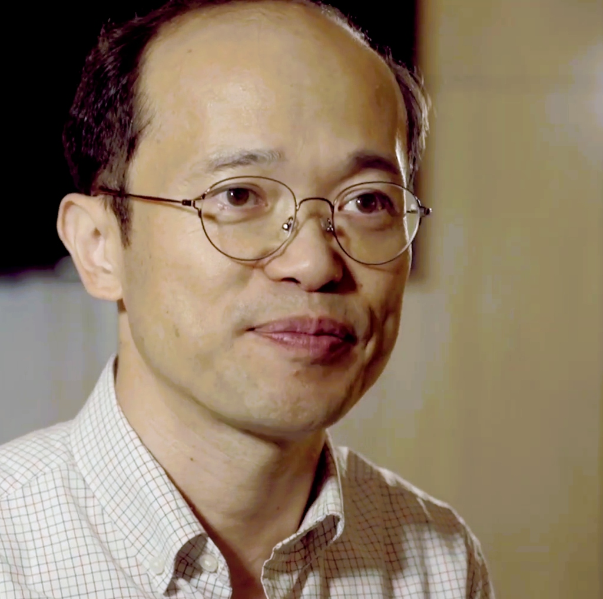
KAIST 화학과 교수 (2019 ~ )
양자 화학 분야의 이론 및 계산 연구를 이끌고 있습니다.


CPRL 연구진
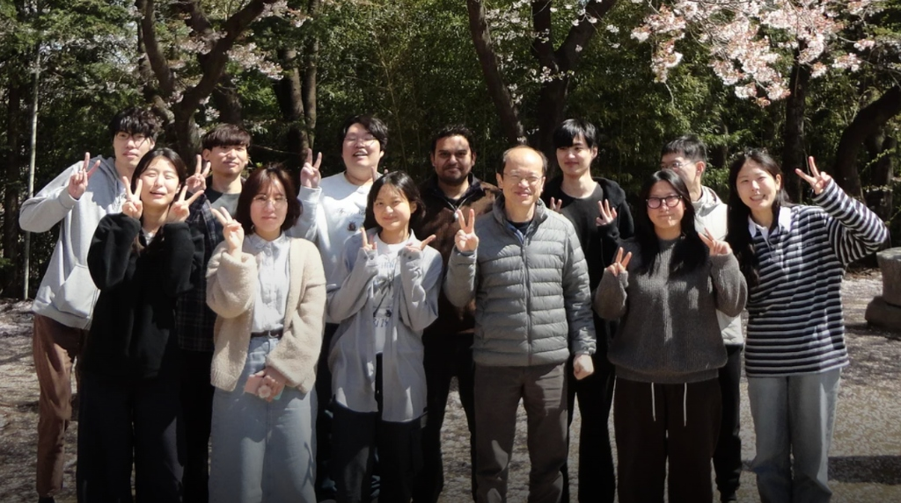
눈에 보이지 않는 작은 세계를
컴퓨터 가상 실험실에서 탐험합니다
KAIST 화학과 CPRL(화학물리연구실)은 화학약품을 섞는 실험실이 아닌, 슈퍼컴퓨터와 양자 컴퓨터를 활용해 화학 반응 및 양자 세계를 탐구하는 연구실입니다. 우리가 매일 사용하는 스마트폰 액정 화면부터 미래 인류를 구할 신약 분자 설계까지, 컴퓨터 시뮬레이션으로 화학의 새로운 미래를 열어가고 있습니다.
화학 반응 에너지 지형도 구축
"컴퓨터와 AI를 활용해, 복잡한 화학 반응의 에너지 지형을 빠르고 정확하게 계산해요"
수만 개의 원자가 얽혀 있는 생명체 속 단백질이나 신약 분자의 화학 반응은 슈퍼컴퓨터로도 하나하나 정밀하게 계산하기 어렵습니다. 따라서 화학 반응이 직접 일어나는 핵심 영역은 정밀한 양자역학으로 세밀하게 계산하고, 주변을 둘러싼 방대한 물 분자나 단백질 환경은 계산 속도가 빠른 분자역학으로 효율적으로 처리하는 하이브리드 시뮬레이션 기술(IM/MM)을 CPRL 연구실에서 독자 개발했습니다. 여기에 인공지능(신경망 머신러닝)을 결합하여 복잡한 에너지 변화를 수학적으로 매끄럽게 보간함으로써, 화학 반응의 전 과정을 실제 실험실보다 훨씬 빠르고 정확하게 컴퓨터 가상 공간에서 예측해 냅니다.
양자 효과 시뮬레이션
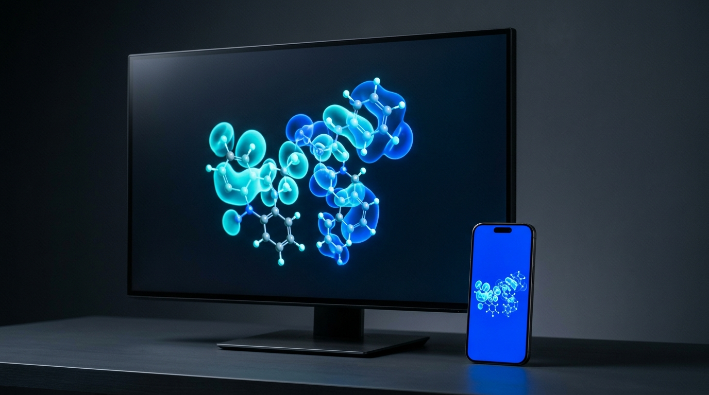
"스마트폰에 갇혀있던 75%의 전자를 구출하여, 보다 효율적으로 빛을 만들어요"
분자 속 전자들은 주변의 열과 진동 때문에 양자적 특성이 잘 보이지 않지만, 전기를 받으면 높은 에너지 준위로 튀어 올랐다가 내려오며 빛을 방출하는 과정에서 전자 스핀과 결맞음 같은 신비로운 '양자 효과'를 강하게 드러냅니다. 그런데 우리가 매일 쓰는 스마트폰 디스플레이(OLED)에서는 단 25%의 전자들만 빛을 내고, 나머지 75%의 전자는 닫힌 방에 갇혀 '발열'로 사라지는 치명적인 배터리 낭비가 존재했습니다. CPRL 연구실은 독자적인 양자 동역학 시뮬레이션을 통해 갇혀 있던 전자를 높은 에너지 상태로 우회시켜 100% 모두 빛으로 탈출시키는 혁신적인 '핫 엑시톤' 메커니즘을 세계 최초로 규명했습니다.
양자 컴퓨팅 툴 개발

"기존 슈퍼컴퓨터의 한계를 넘어, 양자 컴퓨터와 손잡고 복잡한 분자의 비밀을 풀어요"
분자 속 수많은 전자들은 서로를 밀어내며 복잡하게 얽혀 있어, 분자가 조금만 커져도 계산해야 할 경우의 수가 우주 전체의 모래알 수보다 많아지는 이른바 '지수 폭발(Exponential Explosion)'이 일어납니다. 인류 최강의 슈퍼컴퓨터조차 멈춰버리는 이 난제를 해결하기 위해 CPRL 연구실은 차세대 게임체인저인 양자 컴퓨터를 화학 계산에 전격 도입했습니다. 특히 현재 초기 양자 하드웨어가 지닌 물리적 노이즈를 극복하기 위해, 양자 컴퓨터와 고전 컴퓨터가 정밀하게 역할을 분담하는 독창적인 '양자-고전 하이브리드 알고리즘(VQE-PT2)'을 개발하여 실제 이온트랩 양자 하드웨어에서 화학 반응 예측 오차를 90% 이상 획기적으로 줄였습니다.
스마트폰 화면을 100배 줌인했다!
손바닥 위의 작은 우주, OLED의 비밀
우리가 매일 만지는 스마트폰 화면 속에는 수백만 개의 빛나는 미세 화소가 숨어 있습니다. 물방울 돋보기로 들여다본 빨강·초록·파랑 빛의 마술부터, 화면 뒤 거대한 백라이트를 없애고 종이처럼 얇아진 차세대 디스플레이의 내부 단면까지 생생한 시각 자료로 파헤쳐 봅니다.
스마트폰 속 노란 바나나, 진짜 노란 물감으로 칠한 걸까?
우리가 매일 보는 스마트폰 화면 속 노란 바나나. 돋보기를 바짝 대고 들여다보면 뜻밖의 광경이 펼쳐집니다. 화면 전체에는 분명 매끄러운 노란색 과일이 떠 있지만, 돋보기 렌즈 속을 확대해 보면 노란색 물감은 온데간데없고 오직 빨간색(R)과 초록색(G) 꼬마전구들이 촘촘하게 줄지어 반딧불이처럼 빛나고 있거든요!
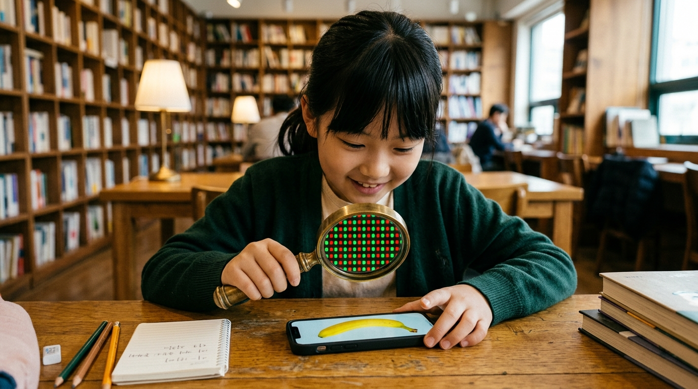
꼬마전구 삼형제(R·G·B)의 마술: 빛으로 그리는 1,670만 가지 색
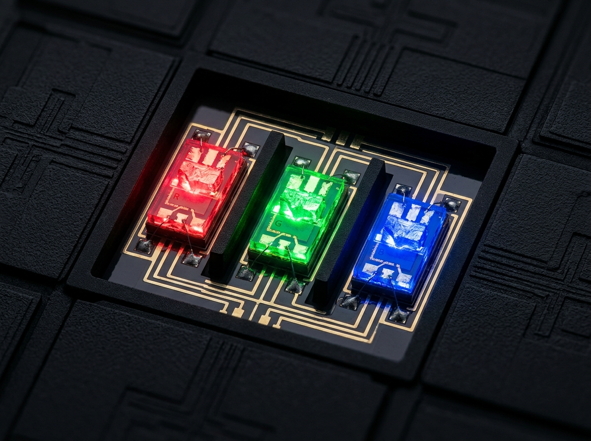
스마트폰 화면을 이루는 최소 단위인 단 1개의 화소(픽셀) 속에는 빨강(R), 초록(G), 파랑(B) 세 가지 미세 꼬마전구(서브픽셀)가 나란히 들어앉아 있습니다.
물감은 섞을수록 탁해져 검은색이 되지만, 빛은 겹칠수록 에너지가 더해져 순백색(100% White)이 되는 가산 혼합의 원리를 따릅니다. 빨간 전구와 초록 전구를 동시에 켜면 신기하게도 탐스러운 노란색 바나나가 완성되고, 세 전구를 모두 최대로 켜면 눈부신 순백색이 됩니다.
각 꼬마전구의 밝기를 256단계(0~255)로 정밀하게 조절하면, 256 × 256 × 256 = 16,777,216가지! 단 3개의 빛만으로 자연계에 존재하는 거의 모든 색을 눈앞에 생생하게 그려냅니다.
화면 뒤 거대한 손전등을 없앴다! LCD vs OLED 단면 해부
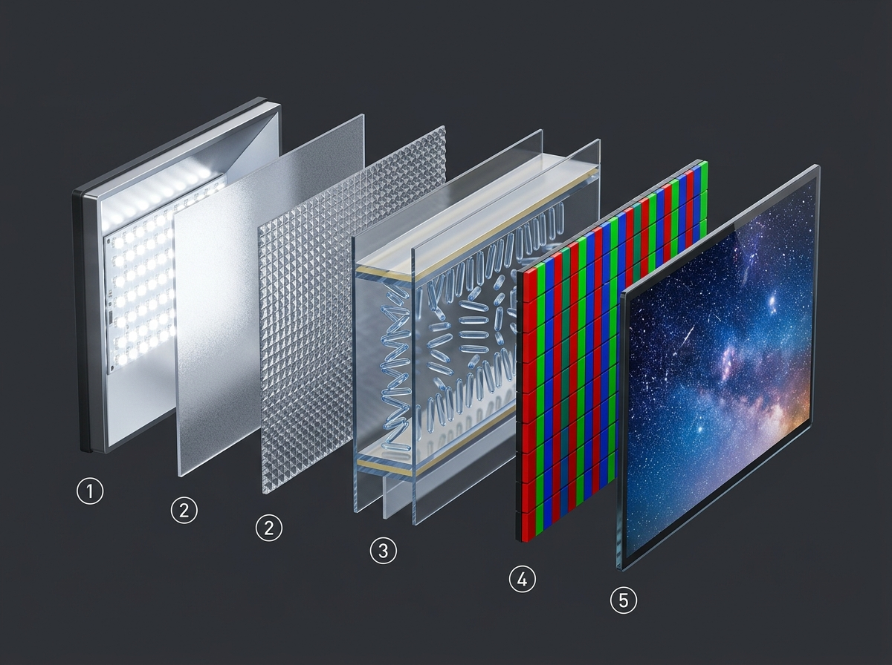
액정 디스플레이 (LCD)
LCD는 화면 뒤편에서 24시간 내내 켜져 있는 거대한 흰색 손전등(백라이트)을 두고, 그 앞에 액정 블라인드와 컬러필터를 겹쳐 빛을 가려가며 색을 표현합니다. 문제는 밤하늘처럼 어두운 검은색을 표현할 때도 뒤편의 손전등은 항상 켜져 있다는 점입니다. 액정 블라인드를 아무리 꽉 닫아도 미세한 틈새로 손전등 빛이 새어나오는 빛샘 현상이 발생하여, 완벽한 칠흑 대신 뿌연 회색 밤하늘로 보이게 됩니다. 또한 두꺼운 조명판과 단단한 유리 기판이 여러 겹 겹쳐 있어 화면이 두껍고 절대 구부릴 수 없습니다.
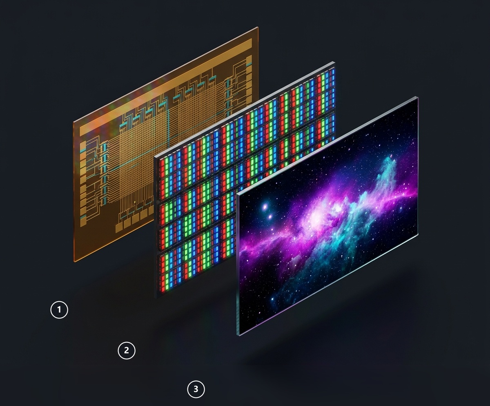
유기 발광 소자 (OLED)
반면 OLED는 뒤를 비추던 거대한 손전등을 통째로 없앴습니다. 유기 화합물로 만들어진 미세 화소 하나하나가 전기를 받으면 스스로 빛을 내기(자발광) 때문입니다. 특히 검은색을 표현할 때는 해당 화소의 전원을 0%로 완전히 꺼버립니다. 빛이 단 0.001%도 새어나오지 않아 우주 한가운데처럼 완벽한 칠흑의 리얼 블랙과 무한한 명암비를 완성합니다. 게다가 두꺼운 조명판과 유리가 빠져 두께가 0.1mm 수준으로 얇아졌으며, 종이처럼 반으로 접히는 놀라운 폴더블 스마트폰이 탄생할 수 있었습니다.
백라이트가 사라지며 바뀐 4가지 변화
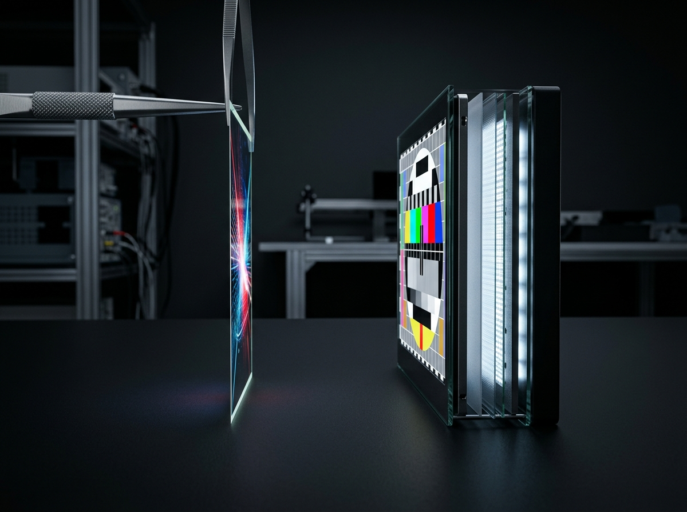
01두께 혁명: 백라이트 5겹 부품 제거
패널 뒤를 차지하던 무거운 조명판과 광학 부품들을 모두 없애 종이처럼 얇아졌습니다.
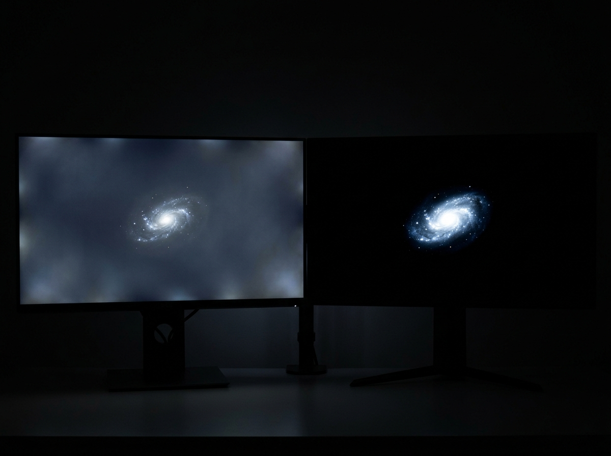
02빛의 혁명: 완벽한 우주의 리얼 블랙
검은색 화소는 전원을 완전히 꺼버려 빛이 전혀 새지 않아 무한대의 명암비를 만듭니다.
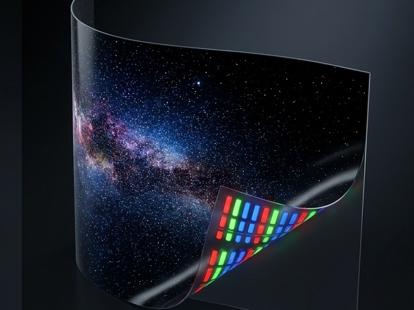
03형태 혁명: 종이처럼 접히는 폴더블
깨지는 유리 대신 유연한 필름을 사용하여 마음대로 접거나 둘둘 마는 화면이 탄생했습니다.
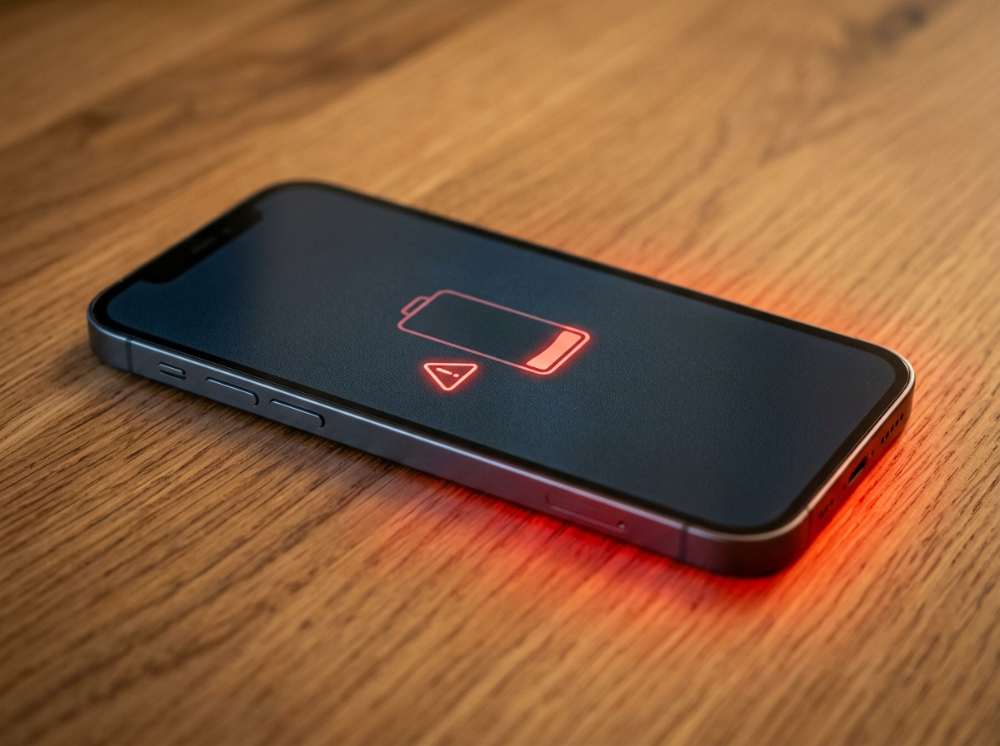
04에너지 혁명: 다크 모드 배터리 절약
검은 화면에서는 화소가 전기를 전혀 쓰지 않아 스마트폰 배터리가 오래갑니다.
KAIST CPRL 가상 실험실 쇼케이스
분자의 미시 세계와 양자역학적 상태를 학생들이 브라우저에서 직접 조작하고 체감할 수 있도록 구축된 대화형 인터랙티브 가상 실험실 허브입니다. 카드를 클릭하면 즉시 시뮬레이션이 실행됩니다.
빛의 합성과 OLED 패키지 가상실험실
013D 형광빛의 원리
자외선(UV) 빛을 흡수한 전자가 3층으로 들뜬 후 열을 흘리고 파란색 형광으로 착지하는 에너지 보존 과정을 3D 공간에서 직접 조작합니다.
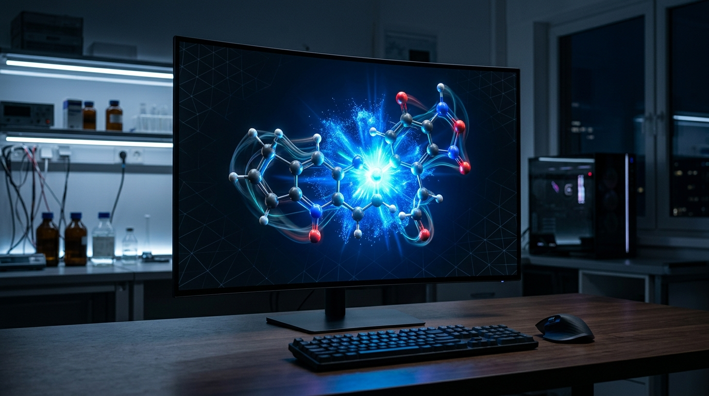
OLED 4차시 진동판 & 분자 3D02스마트폰 에너지 효율 분자 연구
지진 진동판 건물 흔들림 비유를 통해, 분자 골격을 고정하여 75% 열 진동을 차단하고 100% 빛으로 전환하는 원천 기술을 시뮬레이션합니다.
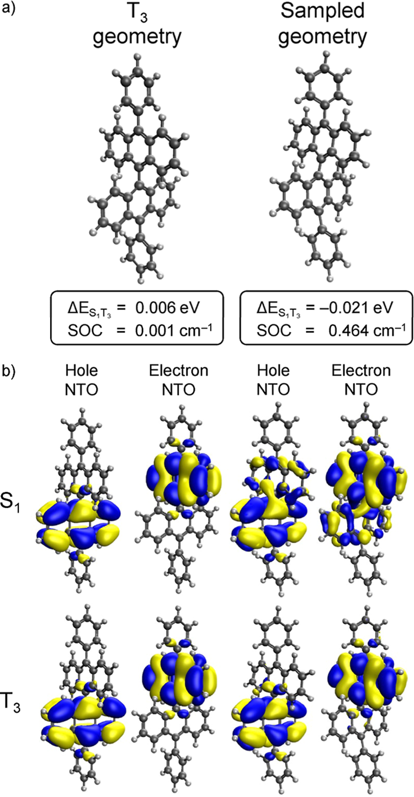
OLED 심화 스핀 통계 랩03100개 엑시톤 스핀 통계
전류 주입 시 생성되는 단일항(25%)과 삼중항(75%)의 스핀 비율을 분석하고, KAIST 핫 엑시톤 스위치로 버려지던 열을 빛으로 구출합니다.
양자컴퓨터의 활용 패키지 가상실험실
양자 2차시
확률 측정 랩
04동전 팽이와 큐비트 중첩
정지한 동전(고전 비트)과 회전하는 동전(큐비트 중첩)을 비교하고, 중첩 각도 조절로 100회 연속 측정 확률을 검증합니다.
052인 3각 VQE 바닥 상태 탐색
수소 분자($H_2$)의 결합 거리(R)를 조절하며, 양자 컴퓨터와 일반 컴퓨터가 피드백 루프로 최저 결합 에너지를 찾아냅니다.
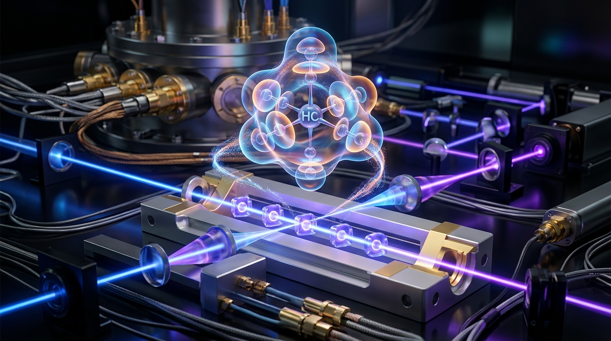
심화 연계 3D 심층 인터랙티브06이온트랩 양자 프로세서 해부
원자 오븐, 폴 트랩 회전 전기장, 레이저 냉각 기술을 고해상도 3D 인터랙티브 그래픽으로 직접 회전하고 분해합니다.
수업용 발표 슬라이드 런처 & 대화면 반응형 최적화
OLED 디스플레이와 양자컴퓨터 패키지의 전 차시 슬라이드를 한눈에 조망하고 1클릭으로 실행합니다. 우측 상단의 [전체화면] 버튼을 누르면 32인치 대화면 및 전자칠판 크기에 맞춰 폰트와 레이아웃이 뷰포트 비율에 따라 웅장하게 자동 비례 확대됩니다.
빛의 합성과 OLED 패키지 발표 슬라이드
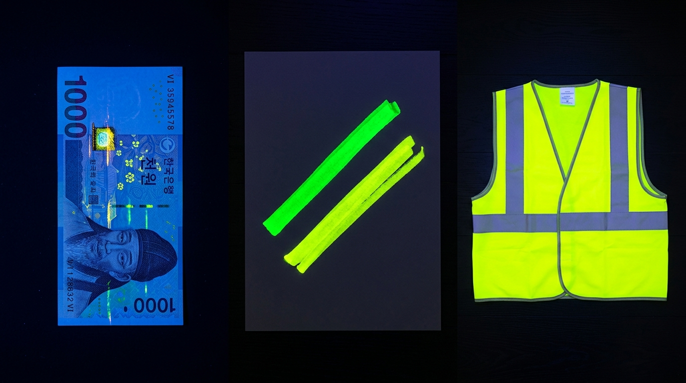
OLED 1차시01보이지 않는 자외선
토닉워터와 형광펜의 자외선 반응, 스펙트럼 관찰과 형광의 기초 원리를 탐구하는 슬라이드 덱.
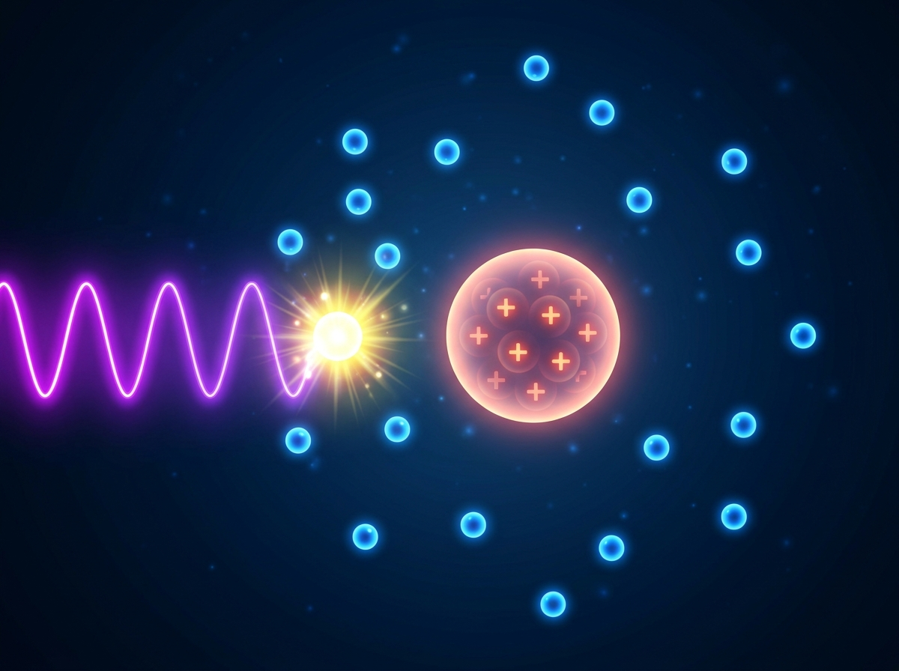
OLED 2차시02전자의 에너지 계단
전자의 에너지 흡수, 진동 열이완, 형광 방출(스토크스 이동) 과정을 시각화한 슬라이드 덱.
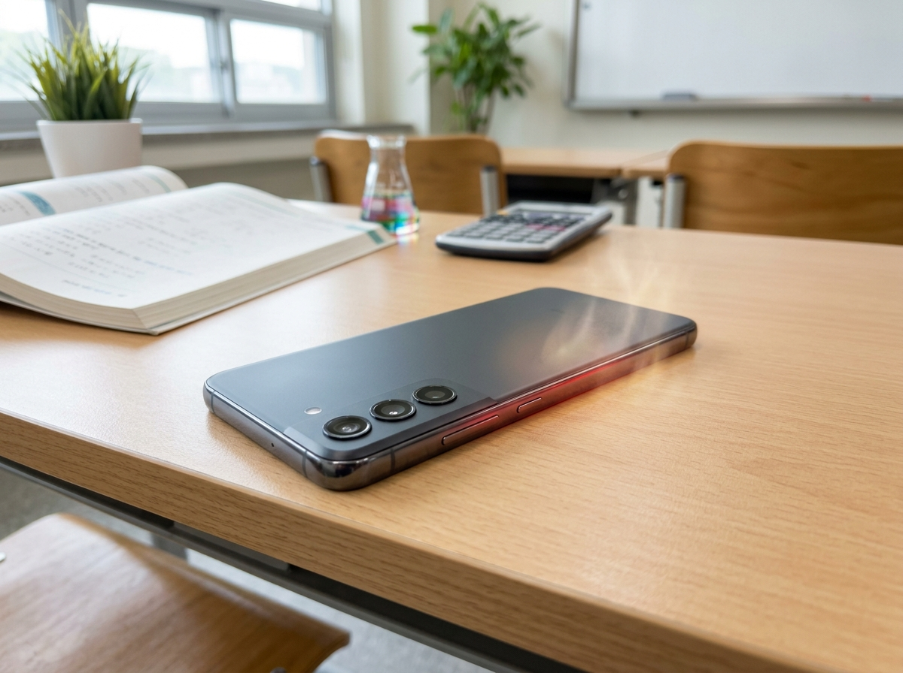
OLED 3차시0375% 배터리 도둑
OLED 디스플레이의 발광 원리와 양자역학적 스핀 통계(단일항 25% vs 삼중항 75%) 열손실 슬라이드 덱.
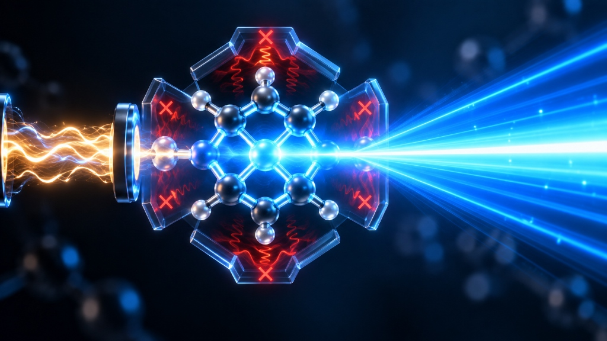
OLED 4차시04KAIST의 분자 연구
분자 골격 고정화 및 핫 엑시톤 기술로 75% 열손실을 극복하는 KAIST CPRL 분자 공학 슬라이드 덱.
양자컴퓨터의 활용 패키지 발표 슬라이드
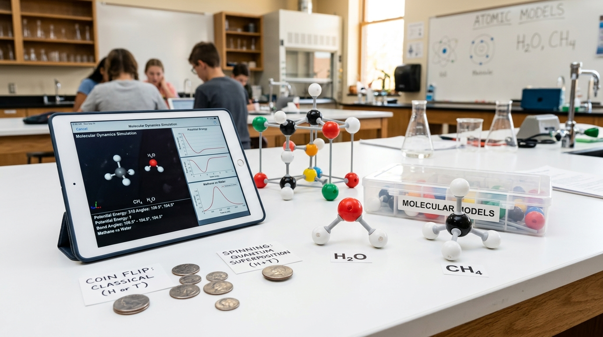
양자 1차시01슈퍼컴퓨터의 한계
체스판 쌀알 퀴즈와 $2^N$ 지수 폭발, 카페인 분자조차 계산 못하는 슈퍼컴퓨터의 한계를 밝히는 슬라이드 덱.
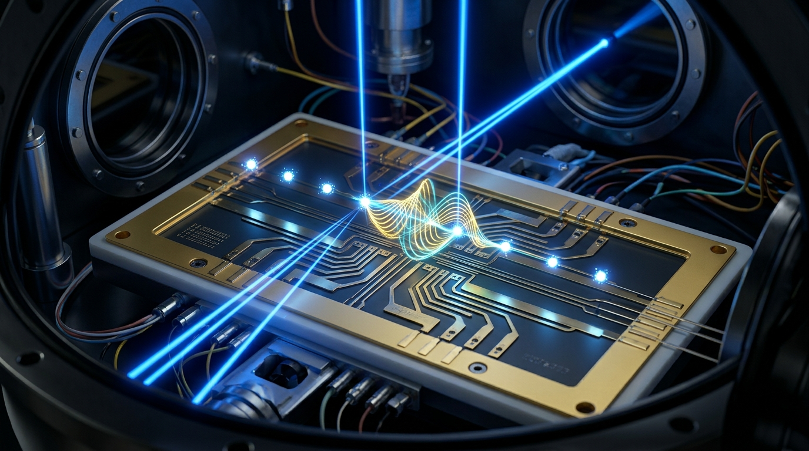
양자 2차시02동전 팽이와 큐비트
고전 비트(0 or 1)와 회전하는 동전 팽이(0 and 1 중첩), $2^N$개의 길을 단번에 탐색하는 양자 병렬성 슬라이드 덱.
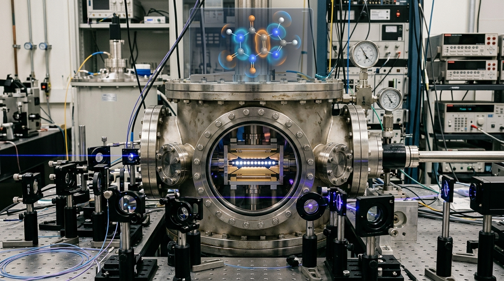
양자 3차시032인 3각 VQE 알고리즘
양자 컴퓨터와 일반 컴퓨터가 데이터를 주고받으며 분자의 최저 결합 에너지를 찾아가는 하이브리드 VQE 슬라이드 덱.
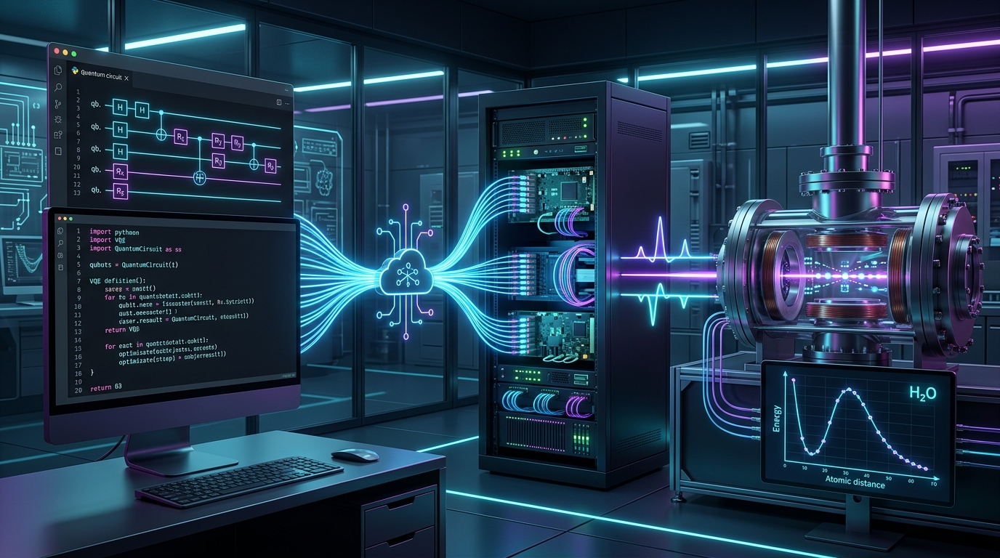
양자 4차시04틴에이저 퀀텀 CEO
상온 비료 촉매, 전고체 배터리, 변종 바이러스 신약 설계를 주도하는 미래 양자 계산화학자 슬라이드 덱.
OLED 스핀 통계 한계 극복과
핫 엑시톤(Hot Exciton) 광물리 원천 해설
한국과학기술원(KAIST) 화학과 계산 광동역학 연구실(CPRL / 이영민 교수)의 분자 광물리 및 비단열 여기상태 연구를 중학교 2학년 과학(빛과 파동, 물질의 구성, 전기와 자기) 교육과정으로 전이하기 위한 교사용 전문 지침서입니다.
교육과정 전이 철학: "수식의 경량화, 개념의 본질화"
대학원 수준의 유기 광물리는 복잡한 다체 파동함수, 비단열 원추교차(Conical Intersection), 스핀-궤도 결합 해밀토니안($\hat{H}_{\text{SO}}$)을 다룹니다. 그러나 이를 중학교 교실로 가져올 때의 핵심은 "수학적 장벽은 걷어내되, 과학적 인과관계와 자연의 규칙성은 100% 보존하는 것"입니다.
• 현상 기반 도입: 일상 속 토닉워터 자외선 형광, 스마트폰 발열 현상으로 호기심 촉발.
• 직관적 과학 은유: 원자 속 전자의 트램펄린 점프(전자 전이), 부르르 떨며 열 흘리기(진동 이완), 마주보는 팽이(단일항)와 나란한 팽이(삼중항).
• 교육과정 정합성: 2022 개정 성취기준 [9과10-03](빛의 합성) 및 [9과14-03](전기에너지의 열·빛 전환)과의 완벽한 유기적 결합.
유기 발광 분자의 스핀 통계와 75% 열 손실 딜레마
유기 발광 다이오드(OLED)에서 음극의 전자($e^-$)와 양극의 정공($h^+$)이 만나 형성하는 엑시톤은 전자 스핀 $s=1/2$에 의해 단일항(25%)과 삼중항(75%)으로 양자역학적으로 갈라집니다.
$10^{-9}$초 단위 초고속 형광(Fluorescence) 방출!
바닥 상태($S_0$)와 스핀 다중도가 같아 쌍극자 전이가 허용됩니다. 전자가 지체 없이 1층으로 착지하며 10억 분의 1초 만에 눈부신 빛을 뿜어냅니다.
스핀 금지 전이 ➔ 상온 75% 열 손실 배터리 도둑!
바닥 상태로의 전이가 스핀 법칙에 의해 엄격히 금지됩니다. 전자가 빛을 내지 못하고 갇혀 분자를 흔들며 열을 내뿜어 스마트폰 발열을 일으킵니다.
CPRL 원천 연구: 핫 엑시톤(Hot Exciton) $T_2 \to S_1$ 역간교차 메커니즘
KAIST CPRL 이영민 교수 연구진은 고에너지 들뜬 삼중항 준위($T_2$ 이상)에 주목하였습니다. 전하 재결합 시 고에너지 상태로 생성된 삼중항 전자가 최저 삼중항($T_1$)으로 가라앉기 전에, 높은 옥상 준위에서 최저 들뜬 단일항($S_1$)으로 초고속 역간교차(RISC: $T_2 \to S_1$)를 일으켜 100% 형광으로 방출시키는 통로입니다.
교사용 수업 브릿지 전략 및 현장 발문 Q&A
Q1. 중학생이 "빛을 흡수했는데 왜 다른 색의 빛이 나와요?"라고 묻는다면?
[교사 지도 팁]: "빛은 에너지를 배달하는 에너지 택배원이야. 자외선은 큰 에너지 택배를 싣고 와서 원자 속 전자를 3층으로 번쩍 올려놓았지. 그런데 3층이 너무 높아 불안해서 전자가 온몸을 부르르 떨며 일부 에너지를 '열'로 흘려버렸단다. 그래서 남은 에너지만 가지고 1층으로 내려오니까, 처음 들어간 자외선보다 에너지가 작아져서 눈에 보이는 파란색이나 초록색 가시광선(형광)으로 변해서 나온 거야! 이때도 [흡수한 자외선] = [방출된 형광] + [흘린 열]이라는 위대한 에너지 보존 법칙은 100% 지켜진단다."
Q2. 중학교 2022 개정 교육과정과의 정확한 연계 논리는 무엇인가요?
[교사 지도 팁]: 중학교 2학년 [9과10-03](빛의 합성 및 영상 장치), [9과11-02](원자 모형과 전자), [9과14-02](전류 모형 및 반도체 해설), [9과14-03](전기 에너지의 열·빛 전환과 소비 전력) 성취기준과 유기적으로 결합됩니다. 교과서에 머물러 있는 도체/반도체와 RGB 화소 개념을 'KAIST 첨단 OLED 분자 공학'과 직결시켜 학생들의 융합 탐구 사고력을 비약적으로 끌어올립니다.
원자 한 개를 낚아채 양자 두뇌를 만들다:
이온 트랩 하드웨어와 파이썬 알고리즘의 비밀
"가열된 금속 기체에서 어떻게 원자 1개를 진공에 가둘까?", "왜 이온들이 서로 밀어내지 않고 일렬로 줄을 설까?",
그리고 "내가 작성한 10줄의 파이썬 코드가 어떻게 물리적 레이저 펄스로 변해 화학 분자의 비밀을 풀까?"
KAIST 화학과 계산화학 연구실(CPRL)이 실제 실험 장비와 물리학 원리로 그 모든 궁금증을 명쾌하게 풀어드립니다.
양자 컴퓨터의 '두뇌'는 무엇으로 만드는가?
반도체 실리콘 칩(0과 1) vs 자연이 만든 완벽한 원자(중첩과 얽힘)
우리가 매일 사용하는 스마트폰과 노트북 속 CPU는 실리콘(규소, Si) 기판 위에 수십억 개의 미세한 스위치(트랜지스터)를 만들어 둡니다. 전기가 통하면 1, 통하지 않으면 0이라는 디지털 2진수로 세상의 모든 계산을 처리합니다.
하지만 양자 컴퓨터(Quantum Computer)는 완전히 다릅니다. 인위적으로 만든 트랜지스터 스위치를 쓰는 것이 아니라, 물질의 가장 깊숙한 기본 단위인 '원자' 그 자체의 양자역학적 상태를 정보의 기본 단위인 큐비트(Qubit, Quantum Bit)로 사용합니다.
초전도 큐비트 (Superconducting)
- 재료: 실리콘 기판 위에 알루미늄/니오븀 초전도 금속 박막 회로 제작
- 원리: 극저온에서 저항이 0이 되는 초전도 전류의 회전 방향(시계/반시계)으로 0과 1을 정의
- 장점: 회로 연산 속도(나노초 단위)가 매우 빠르고 반도체 공정 활용 가능
- 약점: 인간이 깎아 만든 금속이라 큐비트마다 미세한 오차가 존재하며, 영하 273.14℃(15 mK)를 유지하는 거대한 '황금빛 샹들리에(희석 냉동기)'가 반드시 필요함
이온 트랩 큐비트 (Trapped Ion)
- 재료: 희토류 원소인 이테르븀(Yb, 원자번호 70) 또는 알칼리 토금속인 칼슘(Ca), 바륨(Ba)
- 원리: 전자 하나를 떼어낸 순수 양이온(Yb⁺)의 최외각 전자 스핀 궤도 에너지 준위 사용
- 장점: 지구에서 잡든 안드로메다 은하에서 잡든 우주에 존재하는 모든 이테르븀 원자는 100.000% 완벽히 동일함 (품질 편차 0, 긴 결맞음 시간)
- 상태 유지: 극저온 냉동기가 필요 없으며, 실온(Room Temp)의 진공 챔버 안에서 전자기장으로 공중에 띄워 유지함!
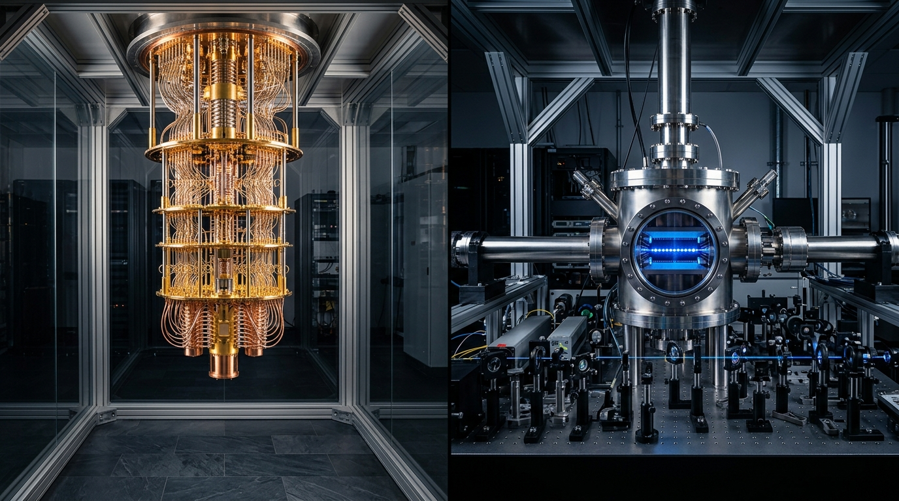
초전도 방식이 "인간이 정밀 기계로 나노미터 크기의 똑같은 모래시계를 수백 개 깎아 맞추려 애쓰는 기술"이라면, 이온 트랩 방식은 "신(자연)이 이미 100억 년 전에 완벽하게 오차 0으로 만들어둔 똑같은 물방울(원자)을 공중에 띄워 쓰는 기술"입니다.
가열된 원자에서 이온을 낚아채는 마법
"금속 덩어리를 400℃로 가열하는데 어떻게 허공에 딱 멈춰 세울까?"
"고체 금속을 가열하면 기체가 되어 사방으로 미친 듯이 날아갈 텐데, 대체 무슨 수로 원자를 하나하나 골라내어 공중에 가둘 수 있나요?" 이것은 물리학자들도 수십 년간 머리를 싸매며 연구했던 노벨 물리학상(1989년 볼프강 파울)의 위대한 발명입니다.
1단계: 원자 오븐(Atomic Oven)에서 원자 빔 분출
손가락 한 마디 크기의 가느다란 스테인리스 스틸 튜브 안에 고체 이테르븀(Yb-171) 금속 조각을 넣고 전류를 흘려 약 400℃ ~ 500℃로 달굽니다. 챔버 내부는 공기 분자가 전혀 없는 초고진공(UHV, 10⁻¹¹ Torr: 달 표면보다 100배 깨끗한 진공) 상태이므로, 기화된 이테르븀 중성 원자들은 공기 저항 없이 미세한 노즐을 통해 한 줄기 총알(초속 수백 미터)처럼 발사됩니다.
2단계: 2단계 공명 레이저 저격 (Two-Step Photo-Ionization)
날아가는 중성 원자 중에서 우리가 원하는 '이테르븀-171' 동위원소만 딱 집어서 전자를 떼어내야 합니다!
• 399 nm 보랏빛 레이저: 오직 이테르븀-171 원자의 최외각 전자만 반응할 수 있는 초정밀 파장을 쏴서 전자를 바깥 궤도(¹P₁)로 들뜨게 만듭니다.
• 369 nm / 394 nm 자외선 레이저: 들뜬 전자에 추가 에너지를 공급해 원자 밖으로 완전히 튕겨내 버립니다!
순식간에 중성 원자는 순수한 양이온(¹⁷¹Yb⁺)으로 변신하며 강력한 전기적 성질(+)을 띠게 됩니다.
3단계: 폴 트랩(Paul Trap) - '회전하는 말안장'의 마법
전자기학의 대원칙인 언쇼의 정리(Earnshaw's Theorem)에 따르면, 고정된 자석이나 고정된 전기장(DC)만으로는 전하를 3차원 허공에 가둘 수 없습니다(반드시 어느 한쪽 방향으로는 미끄러져 튕겨 나갑니다).
물리학자 볼프강 파울은 "말안장을 모터로 빠르게 빙글빙글 돌리는 아이디어"를 고안했습니다!
말안장 한가운데에 쇠구슬을 가만히 올려두면 좌우로 미끄러져 땅에 떨어집니다. 하지만 말안장을 초당 수십 바퀴씩 모터로 아주 빠르게 회전시키면 어떻게 될까요?
구슬이 아래로 떨어지려는 찰나에 안장의 솟아오른 면이 구슬을 위로 쳐올리고, 다시 반대편으로 떨어지려는 순간 또 반대쪽이 쳐올립니다! 구슬은 떨어질 틈을 찾지 못하고 마치 보이지 않는 그릇에 담긴 것처럼 말안장 회전축 정중앙에 둥둥 떠 있게 됩니다.
이온 트랩에서는 4개의 전극에 초당 수천만 번(수십 MHz) 극성이 바뀌는 라디오파(RF 고주파 전압)를 걸어 이온을 허공에 가둡니다!
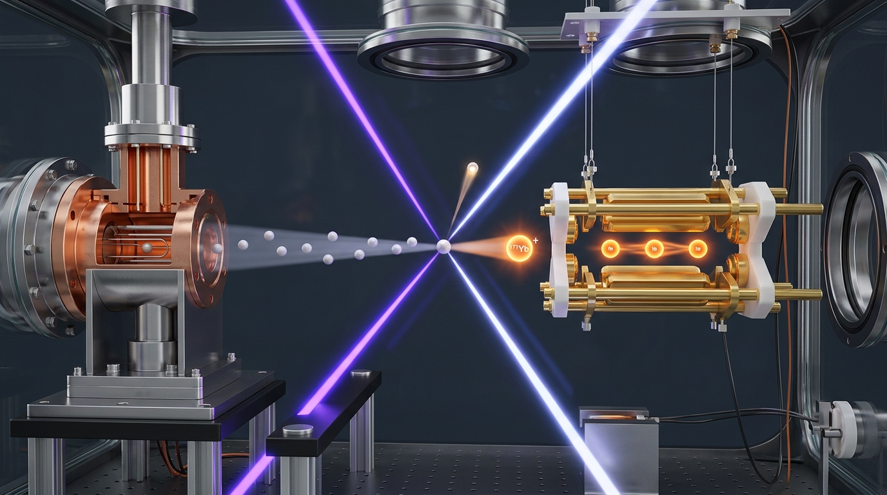
1열 종대와 쿨롱 결정(Coulomb Crystal)
"양이온끼리는 서로 밀어낼 텐데, 어떻게 완벽한 일렬로 줄을 설까?"
양이온(+ 전하) 여러 개를 한 공간에 가두면 당연히 쿨롱 척력(서로 밀어내는 힘) 때문에 사방으로 흩어지려 합니다. 게다가 처음 가열되어 오븐에서 튀어나온 이온은 온도가 수백 ℃에 달해 엄청난 속도로 요동치고 있습니다. 이 문제를 해결하는 두 가지 물리적 기술이 바로 도플러 레이저 냉각과 선형 폴 트랩의 기하학적 구속입니다.
도플러 레이저 냉각 (Doppler Laser Cooling) - 브레이크 밟기
빛(광자)도 질량과 운동량을 가지고 있습니다. 날뛰는 이온을 향해 369.5 nm 레이저를 마주 비춰줍니다.
도플러 효과: 이온이 레이저를 향해 달려올 때만 빛의 파장이 압축되어 공명 흡수가 일어나며 광자의 반대 방향 충격을 받습니다(브레이크!). 반대로 레이저와 같은 방향으로 달아날 때는 빛을 흡수하지 않습니다.
수만 번의 브레이크를 연속으로 밟으면서, 이온의 온도는 불과 0.01초 만에 절대영도 직전인 0.0001 K(수백 마이크로켈빈)으로 얼어붙습니다!
쿨롱 결정(Coulomb Crystal)의 형성 - 스프링 구슬 줄다리기
열운동 에너지를 완전히 빼앗긴 차가운 이온들은 이제 전자기장의 형태에 지배당합니다.
선형 폴 트랩은 x축과 y축(좌우/상하)으로는 매우 강력하게 조여 매고, z축(길이 방향)으로는 느슨하게 전기장을 만듭니다.
좌우로는 탈출할 수 없으니 이온들은 z축을 따라 일렬로 정렬할 수밖에 없으며,
"외부 전극이 양쪽 끝에서 밀어 넣는 힘" vs "이온들끼리 서로 밀어내는 쿨롱 반발력"이 완벽한 평형을 이루며 약 5 마이크로미터(μm) 간격으로 완벽한 1열 종대 기차를 만듭니다!
레이저로 계산을 수행하는 원리
"공중에 매달린 원자에 레이저를 쏘는데 어떻게 수학과 화학 문제가 풀릴까?"
원자가 공중에 줄을 서 있는 것만으로는 계산이 되지 않습니다. 이제 이 원자들을 '양자 스위치'로 조작해야 합니다. 이테르븀 이온(¹⁷¹Yb⁺)의 중심에는 원자핵이 있고, 그 주위를 단 1개의 최외각 전자가 돌고 있습니다.
바닥 상태 (F=0, m_F=0)
전자의 스핀 자기모멘트와 원자핵의 스핀이 서로 반대 방향으로 결합된 가장 안정한 에너지 상태. 디지털 신호 0에 해당합니다.
들뜬 상태 (F=1, m_F=0)
스핀이 나란히 정렬되어 바닥 상태보다 정확히 12.642812 GHz(마이크로웨이브 영역) 만큼 높은 에너지를 가진 상태. 디지털 신호 1에 해당합니다.
1-큐비트 게이트: 나노초 레이저 펄스로 중첩(Superposition) 만들기
두 에너지 준위 차이에 정확히 일치하는 355 nm 펄스 레이저를 이온에 쏩니다.
• π (파이) 펄스: 정해진 시간 동안 레이저를 비추면 |0⟩ 상태가 100% 확률로 |1⟩로 뒤집힙니다 (비트 반전, NOT 게이트).
• π/2 펄스: 딱 절반 시간 동안만 레이저를 쪼이면 전자는 |0⟩과 |1⟩의 중간인 50% 확률로 0이면서 동시에 50% 확률로 1인 '중첩 상태'에 놓이게 됩니다 (아다마르, H 게이트)!
2-큐비트 얽힘 게이트: 이온들의 '공동 진동(포논)'으로 대화하기
양자 컴퓨터의 진정한 초능력은 큐비트끼리 운명을 공유하는 양자 얽힘(Quantum Entanglement)에서 나옵니다.
그런데 멀리 5μm나 떨어져 있는 두 원자가 어떻게 서로 소통할까요?
스프링 비유: 1열로 늘어선 양이온들은 서로 양전하(+)로 밀어내고 있기 때문에, 마치 보이지 않는 용수철로 연결된 쇠구슬들과 같습니다.
1번 이온을 레이저로 툭 치면 그 진동(양자 포논, Phonon)이 용수철을 타고 전체 이온으로 전달됩니다!
뫼르머-쇠렌센(Mølmer-Sørensen) 게이트: 이 진동을 매개체로 삼아 두 원자의 전자 스핀을 동시에 뒤흔들면, 한쪽 원자의 상태가 바뀌면 다른 쪽 원자도 즉각 반응하는 완벽한 얽힘 상태가 완성됩니다!
결과 측정: 빛이 나면 1, 캄캄하면 0! (형광 검출법)
계산이 끝났으면 원자 속에 들어있는 답을 디지털 컴퓨터로 읽어와야 합니다.
이온 전체에 369.5 nm 검출 레이저를 쏩니다.
• |1⟩ 상태의 이온: 레이저 빛을 맹렬히 흡수하고 뿜어내며 찬란한 푸른빛(형광 광자)을 방출합니다!
• |0⟩ 상태의 이온: 에너지 준위가 맞지 않아 레이저 빛을 전혀 흡수하지 못하고 완전한 암흑으로 남습니다.
초고감도 EMCCD 카메라가 이 빛을 촬영하여 "빛남 = 1, 어두움 = 0"의 디지털 비트 배열(예: 1011001...)로 즉시 변환합니다!

파이썬(Python)과 양자의 하이브리드 연동
"내가 짠 파이썬 코드가 어떻게 양자 하드웨어를 움직여 화학 문제를 풀까?"
이제 가장 흥미로운 부분입니다! 여러분이 학교 컴퓨터실에서 작성한 파이썬(Python) 코드가 어떤 다리를 건너 실제 실험실 진공 챔버 속 원자들을 지휘하고, KAIST 화학과 CPRL 연구실의 알고리즘을 거쳐 최첨단 분자 에너지를 계산해내는지 5단계 파이프라인으로 확인해 봅시다.
# 1. 고교생이 작성하는 파이썬 양자 화학 계산 코드 예시
from qiskit import QuantumCircuit
from qiskit_braket_provider import BraketProvider
# 수소 분자(H2)의 전자 구조를 위한 2-큐비트 앙상블 회로 생성
qc = QuantumCircuit(2)
qc.h(0) # 0번 큐비트에 아다마르(H) 게이트 적용 (중첩)
qc.cx(0, 1) # 0번과 1번 큐비트 CNOT 얽힘 게이트 적용
qc.rz(theta, 1) # 분자 결합 길이에 따른 양자 위상 회전
qc.measure_all() # 광자 형광 측정 명령
# 2. 클라우드를 통해 실제 이온트랩(IonQ) 양자 컴퓨터로 전송
backend = provider.get_backend('IonQ Aria')
job = backend.run(qc, shots=1000)
result = job.result()
print("측정된 전자 구름 확률 분포:", result.get_counts())[클라이언트] 파이썬 회로 생성 및 QASM 변환
파이썬 라이브러리(Qiskit)는 우리가 작성한 게이트 명령을 양자 어셈블리어인 OpenQASM 3.0(텍스트 명령어)으로 번역하고 JSON 패킷으로 묶어 클라우드 API로 발송합니다.
[서버 랙] 리눅스 마스터 컨트롤러 & 펄스 컴파일러
양자 컴퓨터 옆 19인치 서버 랙의 리눅스(Linux) 시스템이 이 명령어를 받습니다.
리눅스 내의 컴파일러는 QASM 명령어(예: cx q[0], q[1])를 물리적인 "AOM 고주파 전압 제어 펄스 파형(타이밍, 세기, 주파수, 위상)"으로 변환하여 초정밀 하드웨어 제어 보드(FPGA)로 보냅니다.
[챔버 내부] 레이저 저격 및 광자 카운팅
FPGA가 나노초 단위로 레이저 셔터를 열고 닫으며 이온들에게 펄스를 쏘고, EMCCD 카메라가 1000번 반복 측정한 밝기(형광) 데이터를 수집하여 0과 1의 통계 확률로 환산합니다.
[KAIST CPRL의 핵심 혁신] oo-upCCD-PT2 고전-양자 하이브리드 보정
현재 양자 컴퓨터(NISQ)는 완벽하지 않아 약간의 레이저 노이즈가 발생합니다.
KAIST 화학과 이영민 교수 연구실(npj Quantum Information, 2024)은 기막힌 융합 알고리즘을 개발했습니다!
1) 양자 컴퓨터: 전자가 강하게 얽혀 고전 컴퓨터가 풀지 못하는 핵심 궤도(upCCD)만 빠르게 계산.
2) 고전 슈퍼컴퓨터(리눅스 클러스터): 섭동 이론(PT2)과 오비탈 최적화(oo)를 실시간으로 적용해 양자 컴퓨터의 노이즈와 나머지 오차를 수학적으로 깔끔하게 제거!
결과: 순수 양자 하드웨어 단독 계산 대비 화학 반응 에너지 오차를 90% 이상 대폭 줄여 실제 실험값에 완벽히 일치하는 분자 퍼텐셜 에너지 곡선(PES)을 얻어냈습니다!
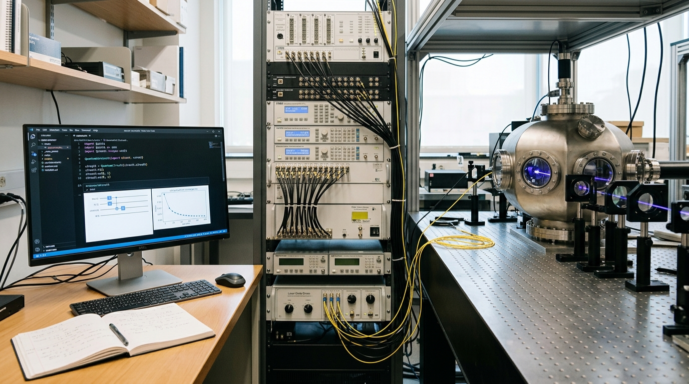
고등학생이 가장 많이 묻는 결정적 질문 TOP 4
물리와 화학 시험에 나오는 개념과 양자 컴퓨터의 연결고리
이테르븀이나 칼슘은 최외각 전자가 2개 있는 금속입니다. 여기서 전자 1개를 떼어내면(단일 양이온), 수소 원자처럼 단 1개의 전자만 남은 가장 단순하고 깔끔한 전자 껍질 구조가 됩니다. 반면 탄소나 산소는 전자를 떼어내도 여러 개의 전자가 서로 복잡하게 상호작용하여 레이저로 깔끔하게 0과 1 준위를 조작하기가 극도로 어렵습니다. 또한 이테르븀-171은 핵스핀이 1/2이어서 지구 자기장의 미세한 노이즈에 영향을 받지 않는 '기적의 시계 전이 준위(Clock Transition)'를 제공합니다.
폴 트랩 전극이 만드는 전기장 우물의 깊이는 이온의 열운동 에너지보다 수천 배나 깊습니다. 즉, 이온 입장에서는 에베레스트 산맥으로 둘러싸인 깊은 분지에 갇혀 있는 셈입니다. 또한 챔버 내부 압력이 10⁻¹¹ Torr로 거의 완전한 무(無)의 상태이므로, 이온과 충돌해 이온을 튕겨낼 공기 분자조차 존재하지 않습니다. 그래서 한 번 포획된 이온은 수 시간에서 수일 동안 공중에 그대로 멈춰 있습니다.
일반 컴퓨터 비트 3개가 있으면
000, 001, ..., 111 중 단 1개의 상태만 표현할 수 있습니다.
하지만 큐비트 3개는 양자 중첩 덕분에 8개의 상태를 동시에 가질 수 있습니다. 큐비트가 50개만 되어도 2⁵⁰(약 1125조) 개의 숫자를 단 한 번의 레이저 펄스로 동시에 처리할 수 있어, 슈퍼컴퓨터로 수만 년 걸릴 화학 분자 상호작용을 단 몇 초 만에 시뮬레이션할 수 있습니다.
양자 컴퓨터는 얽힘이나 미시세계 전자 구름 계산에는 천재적이지만, 단순 덧셈·뺄셈, 파일 저장, 조건문 분기 같은 작업은 일반 컴퓨터가 수억 배 빠르고 정확합니다. 따라서 "양자 컴퓨터는 가장 난해한 핵심 양자 매듭만 풀고, 나머지 정리와 오차 보정은 일반 고성능 리눅스 컴퓨터가 맡는 하이브리드(VQE) 방식"이 현재 인류가 양자 컴퓨터를 가장 실용적으로 활용하는 표준 방식(KAIST CPRL 연구의 핵심)입니다.
KAIST CPRL 가상 실험실 쇼케이스
분자의 미시 세계와 양자역학적 상태를 학생들이 브라우저에서 직접 조작하고 체감할 수 있도록 구축된 대화형 인터랙티브 가상 실험실 허브입니다. 카드를 클릭하면 즉시 시뮬레이션이 실행됩니다.
양자컴퓨터의 활용 패키지 가상실험실
양자 2차시
확률 측정 랩
01동전 팽이와 큐비트 중첩
정지한 동전(고전 비트)과 회전하는 동전(큐비트 중첩)을 비교하고, 중첩 각도 조절로 100회 연속 측정 확률을 검증합니다.
022인 3각 VQE 바닥 상태 탐색
수소 분자($H_2$)의 결합 거리(R)를 조절하며, 양자 컴퓨터와 일반 컴퓨터가 피드백 루프로 최저 결합 에너지를 찾아냅니다.
03이온트랩 양자 프로세서 해부
원자 오븐, 폴 트랩 회전 전기장, 레이저 냉각 기술을 고해상도 3D 인터랙티브 그래픽으로 직접 회전하고 분해합니다.
빛의 합성과 OLED 패키지 가상실험실
043D 형광빛의 원리
자외선(UV) 빛을 흡수한 전자가 3층으로 들뜬 후 열을 흘리고 파란색 형광으로 착지하는 에너지 보존 과정을 3D 공간에서 직접 조작합니다.
05스마트폰 에너지 효율 분자 연구
지진 진동판 건물 흔들림 비유를 통해, 분자 골격을 고정하여 75% 열 진동을 차단하고 100% 빛으로 전환하는 원천 기술을 시뮬레이션합니다.
06100개 엑시톤 스핀 통계
전류 주입 시 생성되는 단일항(25%)과 삼중항(75%)의 스핀 비율을 분석하고, KAIST 핫 엑시톤 스위치로 버려지던 열을 빛으로 구출합니다.
수업용 발표 슬라이드 런처 & 대화면 반응형 최적화
양자컴퓨터와 OLED 디스플레이 패키지의 전 차시 슬라이드를 한눈에 조망하고 1클릭으로 실행합니다. 우측 상단의 [전체화면] 버튼을 누르면 32인치 대화면 및 전자칠판 크기에 맞춰 폰트와 레이아웃이 뷰포트 비율에 따라 웅장하게 자동 비례 확대됩니다.
양자컴퓨터의 활용 패키지 발표 슬라이드
01슈퍼컴퓨터의 한계
체스판 쌀알 퀴즈와 $2^N$ 지수 폭발, 카페인 분자조차 계산 못하는 슈퍼컴퓨터의 한계를 밝히는 슬라이드 덱.
02동전 팽이와 큐비트
고전 비트(0 or 1)와 회전하는 동전 팽이(0 and 1 중첩), $2^N$개의 길을 단번에 탐색하는 양자 병렬성 슬라이드 덱.
032인 3각 VQE 알고리즘
양자 컴퓨터와 일반 컴퓨터가 데이터를 주고받으며 분자의 최저 결합 에너지를 찾아가는 하이브리드 VQE 슬라이드 덱.
04틴에이저 퀀텀 CEO
상온 비료 촉매, 전고체 배터리, 변종 바이러스 신약 설계를 주도하는 미래 양자 계산화학자 슬라이드 덱.
빛의 합성과 OLED 패키지 발표 슬라이드
01보이지 않는 자외선
토닉워터와 형광펜의 자외선 반응, 스펙트럼 관찰과 형광의 기초 원리를 탐구하는 슬라이드 덱.
02전자의 에너지 계단
전자의 에너지 흡수, 진동 열이완, 형광 방출(스토크스 이동) 과정을 시각화한 슬라이드 덱.
0375% 배터리 도둑
OLED 디스플레이의 발광 원리와 양자역학적 스핀 통계(단일항 25% vs 삼중항 75%) 열손실 슬라이드 덱.
04KAIST의 분자 연구
분자 골격 고정화 및 핫 엑시톤 기술로 75% 열손실을 극복하는 KAIST CPRL 분자 공학 슬라이드 덱.
다전자 파동함수 계산의 지수 폭발 극복과
VQE-PT2 하이브리드 양자 알고리즘
한국과학기술원(KAIST) 화학과 계산 광동역학 연구실(CPRL / 이영민 교수)의 이온트랩 양자 컴퓨팅 및 전자구조 계산 원천 연구를 중학교 과학·정보 융합 교육과정으로 전이하기 위한 교사용 전문 지침서입니다.
교육과정 전이 철학: "수식의 경량화, 개념의 본질화"
다체 슈뢰딩거 방정식, 제2양자화 연산자, 힐베르트 공간의 조합론적 팽창 등 양자역학의 엄밀한 수학적 전개는 중학생에게 높은 장벽입니다. 그러나 핵심은 "수학적 장벽은 걷어내되, 동시 병렬성·상태 중첩·2인 3각 하이브리드 협업의 인과관계는 100% 보존하는 것"입니다.
• 직관적 과학 은유: 체스판과 쌀알($2^{63}$, 거듭제곱의 폭발), 회전하는 동전 팽이(스핀 큐비트 중첩), 산골짜기 2인 3각 달리기(VQE).
• 실물 기구 연계: 희토류 이테르븀(Yb-171) 원자를 진공 속 폴 트랩으로 포획하고 레이저로 연산하는 이온트랩 하드웨어 연결.
• 교육과정 정합성: 2022 개정 성취기준(원자 모형, 화학 반응 에너지, 컴퓨팅 알고리즘)과의 유기적 결합.
다전자 파동함수의 지수 폭발($2^N$)과 고전 컴퓨터의 한계
양자화학의 궁극적 목표는 정상상태 슈뢰딩거 방정식 $\hat{H}|\Psi\rangle = E|\Psi\rangle$을 풀어 분자의 기하 구조와 결합 에너지를 예측하는 것입니다. 그러나 원자 주위 전자들은 서로 파울리 배타 원리를 따르며 쿨롱 반발력으로 복잡하게 얽혀 있는 '다체 문제(Many-Body Problem)'를 만듭니다.
FCI 힐베르트 공간의 조합론적 지수 폭발
$M$개의 공간 궤도에 $N$개의 전자를 배치하는 완전 입체배치 상호작용(FCI)의 상태 공간 차원은 $\binom{2M}{N_{\alpha}}\binom{2M}{N_{\beta}}$에 달합니다.
카페인($N=102$)이나 페니실린($N=280$) 분자만 되어도 양자 상태 수가 $10^{30} \sim 10^{84}$를 초과하여, 전 세계 모든 슈퍼컴퓨터의 메모리와 CPU를 총동원해도 우주의 나이(138억 년) 동안 계산할 수 없습니다.
CPRL 원천 연구: 이온 트랩 양자 프로세서 & 하이브리드 VQE-PT2
CPRL 이영민 교수 연구실은 노이즈가 존재하는 현재의 NISQ 양자 하드웨어를 활용하여 다전자 분자의 결합 에너지를 정밀하게 계산하는 양자-고전 하이브리드 VQE-PT2 알고리즘 개발을 선도하고 있습니다.
교사용 수업 브릿지 전략 및 현장 발문 Q&A
Q1. 중학생이 "양자 컴퓨터가 나오면 지금 쓰는 컴퓨터는 다 버려야 하나요?"라고 묻는다면?
[교사 지도 팁]: "절대 아니란다! 고속열차가 생겼다고 자전거나 택배 트럭이 사라지지 않는 것과 같아. 양자 컴퓨터는 유튜브 동영상을 재생하거나 문서를 작성하는 데는 일반 컴퓨터보다 오히려 비효율적이야. 하지만 수백억 개의 미로 길을 동시에 가보거나, 분자 속 전자의 복잡한 얽힘을 계산하는 특별한 문제에서만 빛을 발하지. 미래에도 VQE 알고리즘처럼 일반 컴퓨터와 양자 컴퓨터가 서로 역할을 나누어 2인 3각 달리기로 일하게 된단다."
Q2. 중학교 2022 개정 교육과정과의 정확한 연계 논리는 무엇인가요?
[교사 지도 팁]: 화학 반응의 질량 보존 및 에너지 출입[9과16-01/03/06]을 '양자 계산 화학의 최저 바닥 상태 결합'과 연결하고, 정보 교과의 알고리즘 최적화 단원과 융합하여 학생들의 융합 탐구 사고력을 비약적으로 끌어올립니다.
-
스탠퍼드 대학교 화학과 박사 (지도교수: Vijay S. Pande)2000 – 2005
-
UC 버클리 박사후연구원 (지도교수: Martin Head-Gordon)2005 – 2008
-
서울대학교 화학과 석사 (지도교수: 김명수)1995 – 1997
-
서울대학교 화학과 학사1991 – 1995
-
KAIST 화학과 정교수2019 – 현재
-
스웨덴 왕립공과대학교 (KTH) 초빙교수2023 – 2024
-
KAIST 화학과 부교수2017 – 2019
-
기초과학연구원 (IBS) 복잡계 자기조립 연구단 그룹리더2012 – 2017
-
포항공과대학교 (POSTECH) 화학과 부교수2012 – 2017
-
포항공과대학교 (POSTECH) 화학과 조교수2008 – 2012
-
IPJAE 물리화학상 (대한화학회)2026
-
창의적 교육상 (KAIST)2022
-
신국조학 학업우수상 (대한화학회)2022
-
물리화학 초기 경력상 (대한화학회)2013